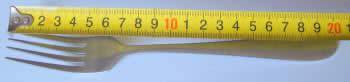
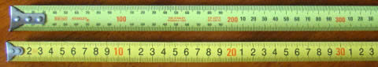
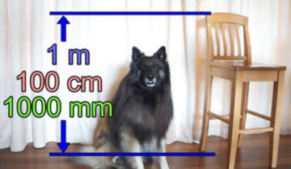
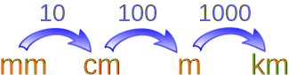

Metric Length
We can measure how long things are, or how tall, or how far apart they are. Those are are all examples of length measurements.

Example: This fork is 20 centimeters long
These are the most common measurements:
- Millimeters
- Centimeters
- Meters
- Kilometers

Small units of length are called millimeters.
A millimeter is about the thickness of a plastic id card (or credit card).
Or about the thickness of 10 sheets of paper on top of each other.
This is a very small measurement!

When we have 10 millimeters, it can be called a centimeter.
1 centimeter = 10 millimeters
A fingernail is about one centimeter wide.

Two tape measures, one in mm, the other in cm
We can use millimeters or centimeters to measure how tall we are, or how wide a table is, but to measure the length of a football field it is better to use meters.
A meter is equal to 100 centimeters.
1 meter = 100 centimeters

The length of this guitar is about 1 meter
Meters can be used to measure the length of a house, or the size of a playground.
And because a centimeter is 10 millimeters:
1 meter = 1000 millimeters

The back of this kitchen chair is 1 meter

A kilometer is equal to 1000 meters.
1 kilometer = 1000 meters
When we need to get from one place to another, we measure the distance using kilometers.
The distance from one city to another or how far a plane travels can be measured using kilometers.
In Summary:

10 millimeters = 1 centimeter
100 centimeters = 1 meter
1000 meters = 1 kilometer
Lots of Examples
A centimeter (cm) is about:
- about as long as a staple
- the width of a highlighter
- the diameter of a belly button
- the width of 5 CD's stacked on top of each other
- the thickness of a notepad.
- the radius (half the diameter) of a US penny
A meter (m) is about:
- a little more than a yard (1 yard is exactly 0.9144 meters)
- the width of a doorway (most doorways are about 0.8 to 0.9 m)
- half the length of a bed
- the width of a large fridge
- the height of a countertop
- four rungs up a ladder
- five steps up a staircase
- the depth of the shallow end of a swimming pool
- the width of a dining table
- heel to elbow of an adult
- shoulder to opposite wrist of an adult
- tip to tip of a child's outstretched arms
- the height of a 5 year old
| One meter is about one long step of an adult man. |
A kilometer (km) is about:
- a little over half a mile
- a quarter of the average depth of the ocean
| One kilometer is around a 12 minute walk. |
 |
Also see Lengths From Very Small to Very Large |